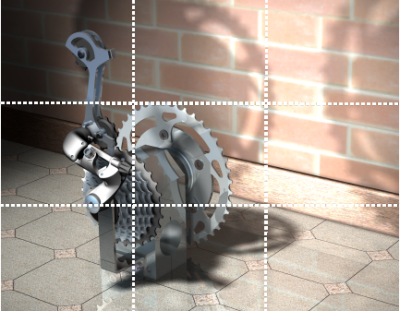

三分法是组建平衡有趣场景的既定技术。
这个方法将一个图像一分为三，在竖直和水平方向创建四个可视交点以及四个可视轴。
考虑将您模型中有趣以及您想表达的方面放置在这些交点上，并沿着这些直线，以使场景更平衡并看起来更容易接受。
示例：

在上图中，注意以下几点：
稠密的主齿轮堆位于交点的左下方
由于齿轮装配竖直放置，您的双眼沿左侧竖直直线看向大齿轮的齿，而竖直的减速器正好迎合您的这个视线
然后您的双眼沿着上方水平直线移动，而大齿轮的阴影刚好排成直线
组建场景时，时刻问自己：
我要强调或者表达什么？
什么是模型和场景最有趣的方面，我要将它们放置在何处？